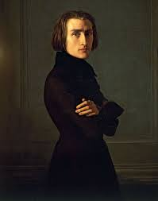

Johann Sebastian Bach was a German composer and musician of the Baroque period. He is known for his intricate and highly expressive compositions that have had a lasting impact on Western classical music. Bach's works include choral music, organ music, orchestral music, and chamber music, and he is often considered one of the greatest composers of all time.
Portrait of Domenico Scarlatti wearing the Order of Santiago, by Domingo Antonio Velasco (1738)
Domenico Scarlatti was an Italian composer and musician of the Baroque era. He is known for his keyboard compositions, particularly his sonatas for harpsichord. Scarlatti's music is known for its virtuosity, creativity, and innovative use of form and harmony. He is considered one of the most important composers of keyboard music in the Baroque period.
Joseph Haydn was an Austrian composer and musician of the Classical era. He is often called the "Father of the Symphony" and the "Father of the String Quartet" due to his significant contributions to these forms of classical music. Haydn's music is characterized by its innovation, wit, and emotional depth, and he is considered one of the most important composers of the Classical period.
Wolfgang Amadeus Mozart, oil on canvas by Barbara Krafft, 1819
Wolfgang Amadeus Mozart was an Austrian composer and musician of the Classical era. He is known for his prolific output of over 600 works, including symphonies, chamber music, operas, and choral music. Mozart's music is characterized by its beauty, complexity, and emotional depth, and he is considered one of the greatest composers in the history of Western classical music.
Ludwig van Beethoven was a German composer and pianist of the Classical and Romantic eras. He is known for his groundbreaking compositions that pushed the boundaries of music at the time. Beethoven's music is characterized by its emotional intensity, innovative use of form and structure, and profound expressions of human emotion. He is considered one of the most important composers in the transition from the Classical to the Romantic era.
Oil painting of Franz Schubert by Wilhelm August Rieder (1875), made from his own 1825 watercolour portrait
Franz Schubert was an Austrian composer and musician of the Romantic era. He is known for his lyrical melodies and expressive harmonies, and his music is considered deeply emotional and introspective. Schubert's works include symphonies, chamber music, and songs, and he is considered one of the most important composers of the Romantic period.
Frédéric Chopin, after a portrait by P. Schick, 1873
Frederic Chopin was a Polish composer and pianist of the Romantic era. He is known for his virtuosic piano compositions, particularly his nocturnes, preludes, and etudes. Chopin's music is characterized by its delicate beauty, emotional depth, and technical innovation, and he is considered one of the greatest composers for the piano in the history of Western classical music. Chopin's music is known for its delicate melodies, rich harmonies, and intricate use of pianistic techniques. He composed numerous piano works, including nocturnes, etudes, preludes, ballades, and waltzes.
Robert Schumann was a German composer and music critic of the Romantic era. He is known for his piano music, songs, and orchestral works. Schumann's music is characterized by its emotional depth, poetic lyricism, and innovative use of harmonic language. He struggled with mental health issues throughout his life but left a significant impact on Romantic music with his compositions and critical writings.

Franz Liszt, oil on canvas by Henri Lehmann, 1840; in the Carnavalet Museum, Paris.
Franz Liszt was a Hungarian composer, virtuoso pianist, and conductor of the Romantic era. He is known for his groundbreaking piano compositions and his contributions to the development of symphonic poem and orchestral techniques. Liszt's music is known for its virtuosity, expressive power, and innovative use of piano techniques. He was a prominent figure in the Romantic movement and had a significant influence on the development of piano playing and composition.
Johannes Brahms was a German composer and pianist of the Romantic era. He is known for his symphonies, chamber music, piano works, and choral compositions. Brahms' music is characterized by its structural complexity, rich harmonies, and emotional depth. He was known for his meticulous craftsmanship and adherence to traditional forms, and his music is considered a continuation of the Classical tradition in the Romantic era.
photograph of Debussy taken by Atelier Nadar in paris, 1909
Claude Debussy was a French composer of the late Romantic and early 20th century period. He is known for his impressionistic and innovative compositions, which challenged traditional harmonic and tonal concepts. Debussy's music is characterized by its evocative imagery, delicate harmonies, and atmospheric textures. He is considered a pioneer of impressionism in music and had a profound influence on the development of 20th-century music.
Kubey-Rembrandt Stodios (Philadelphia, Pennsylvania), Sergei Rachmaninoff, 1 January 1921
Sergei Rachmaninoff was a Russian composer, pianist, and conductor of the late Romantic and early 20th century period. He is known for his virtuosic piano compositions and lush, emotionally charged melodies. Rachmaninoff's music is characterized by its rich harmonic language, expressive melodies, and powerful emotional depth. He is known for his piano concertos, symphonies, and choral works, and his music is highly regarded for its romanticism and technical brilliance.
Maurice Ravel was a French composer and pianist of the late Romantic and early 20th century period. He is known for his exquisite orchestrations, colorful harmonies, and refined musical style. Ravel's music is characterized by its clarity, precision, and attention to detail. He is known for his piano music, chamber music, and orchestral works, and his compositions are known for their innovative harmonies and unique fusion of various musical styles.